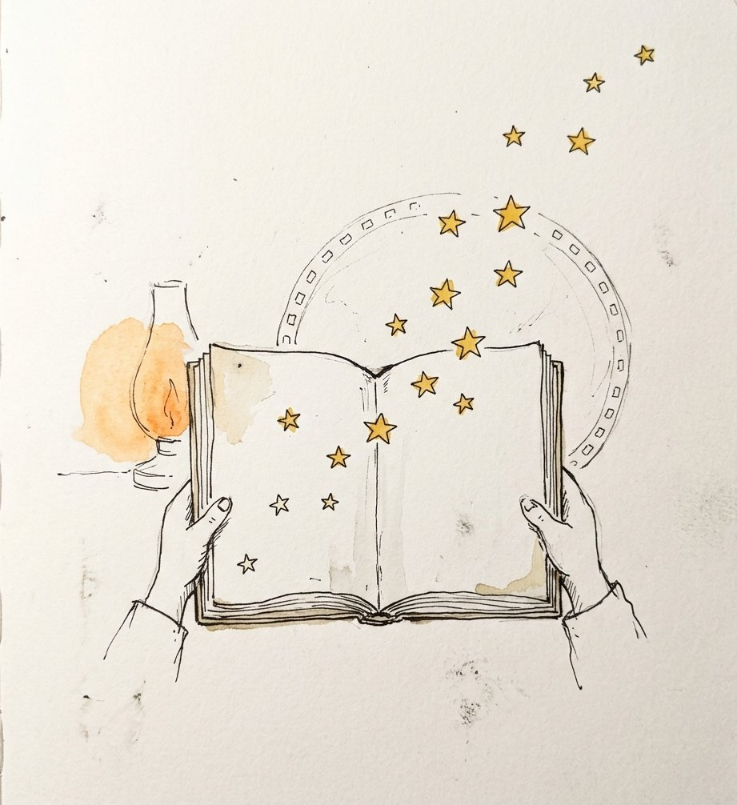
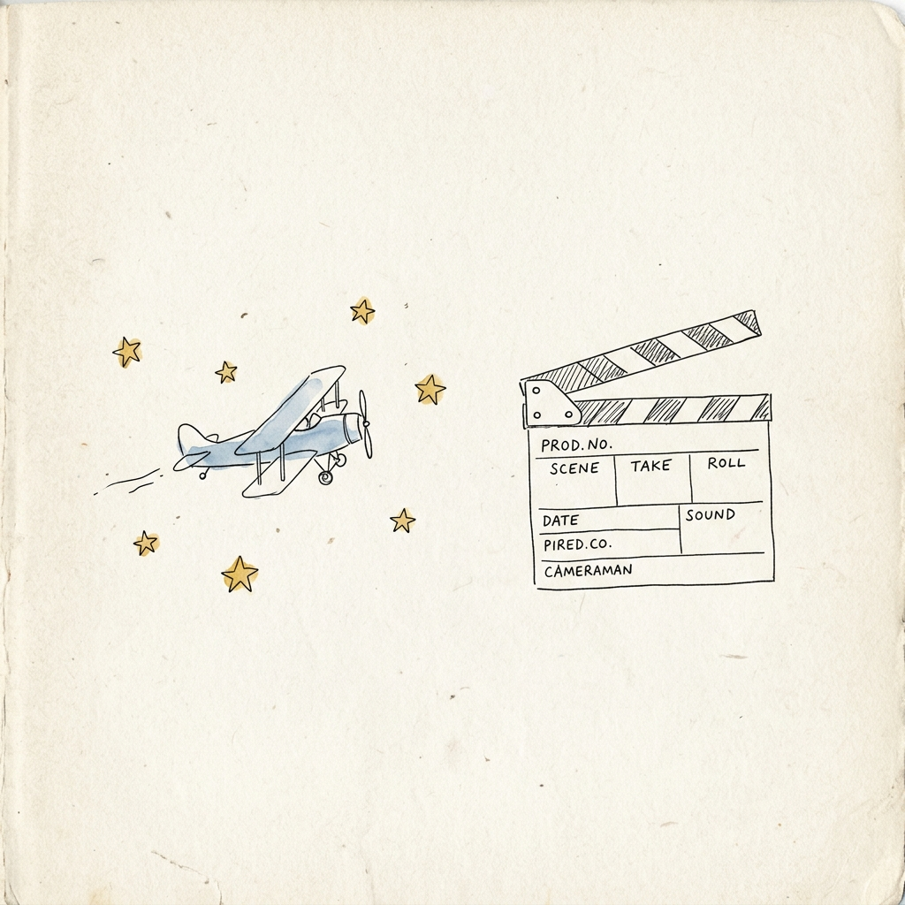
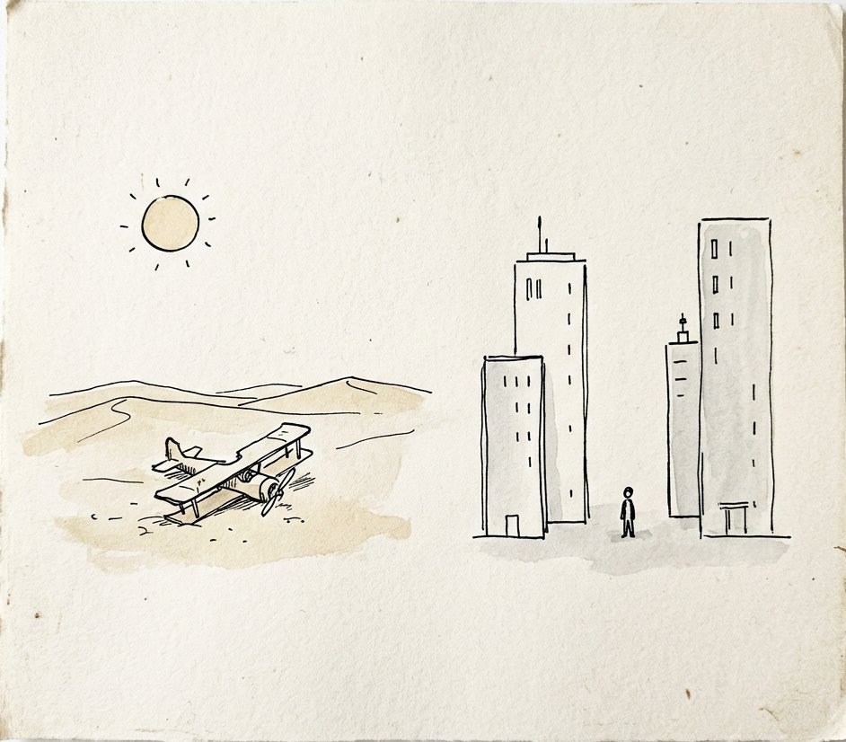
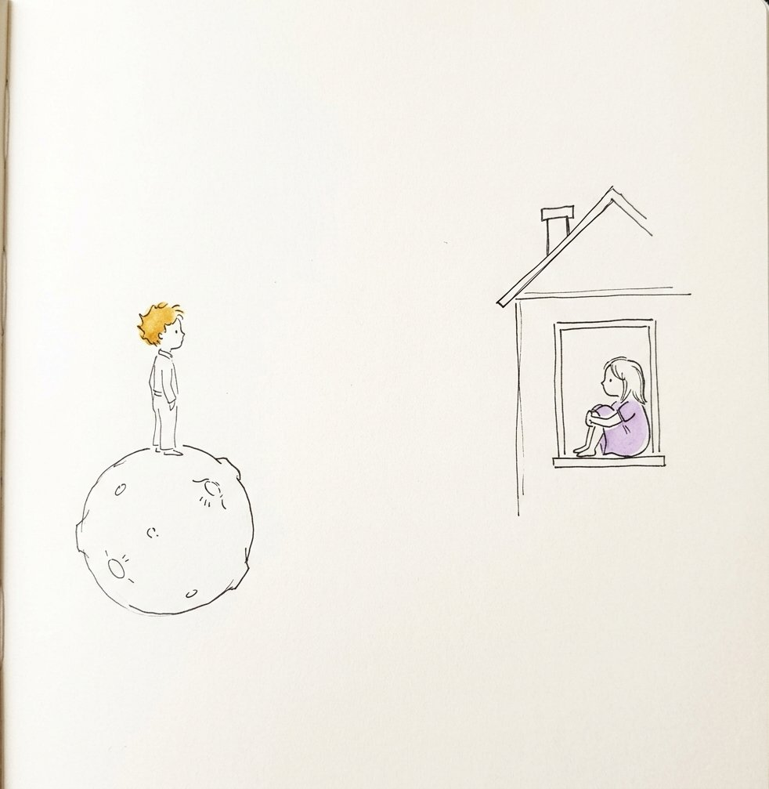
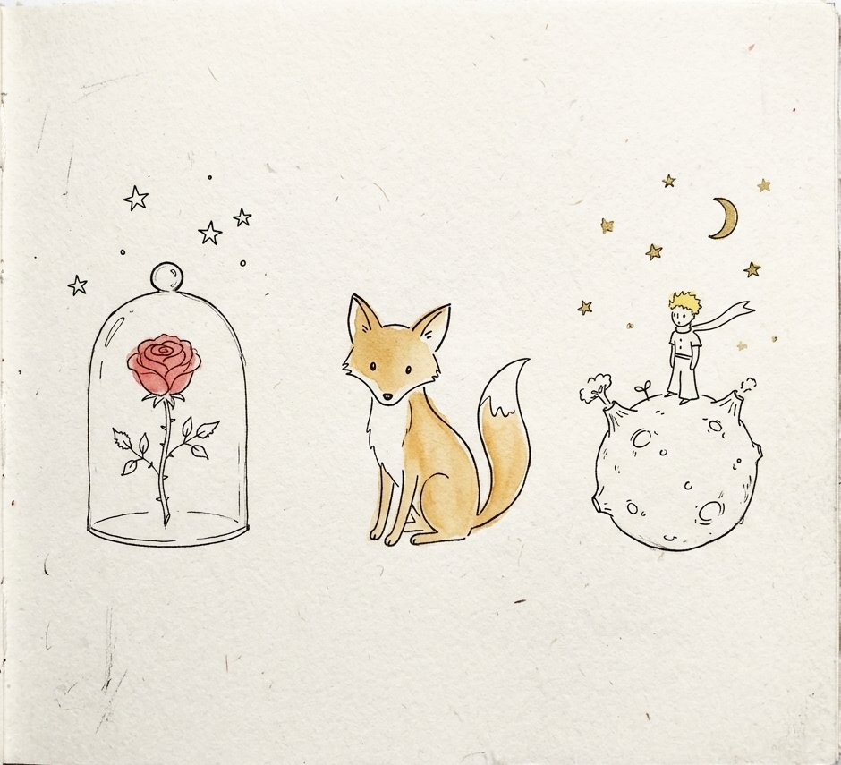
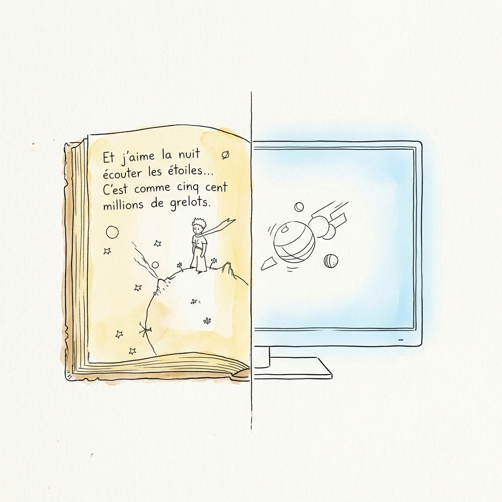
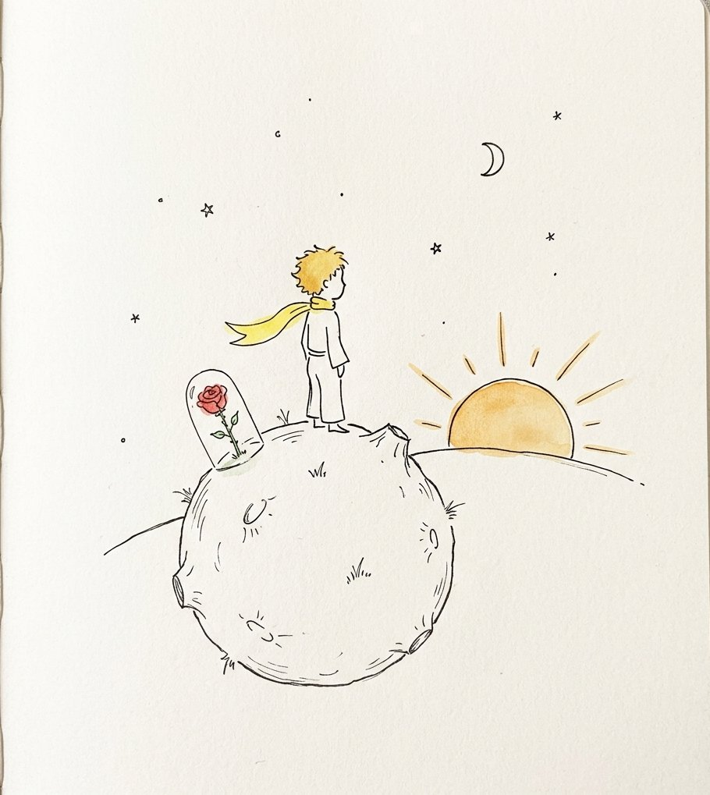
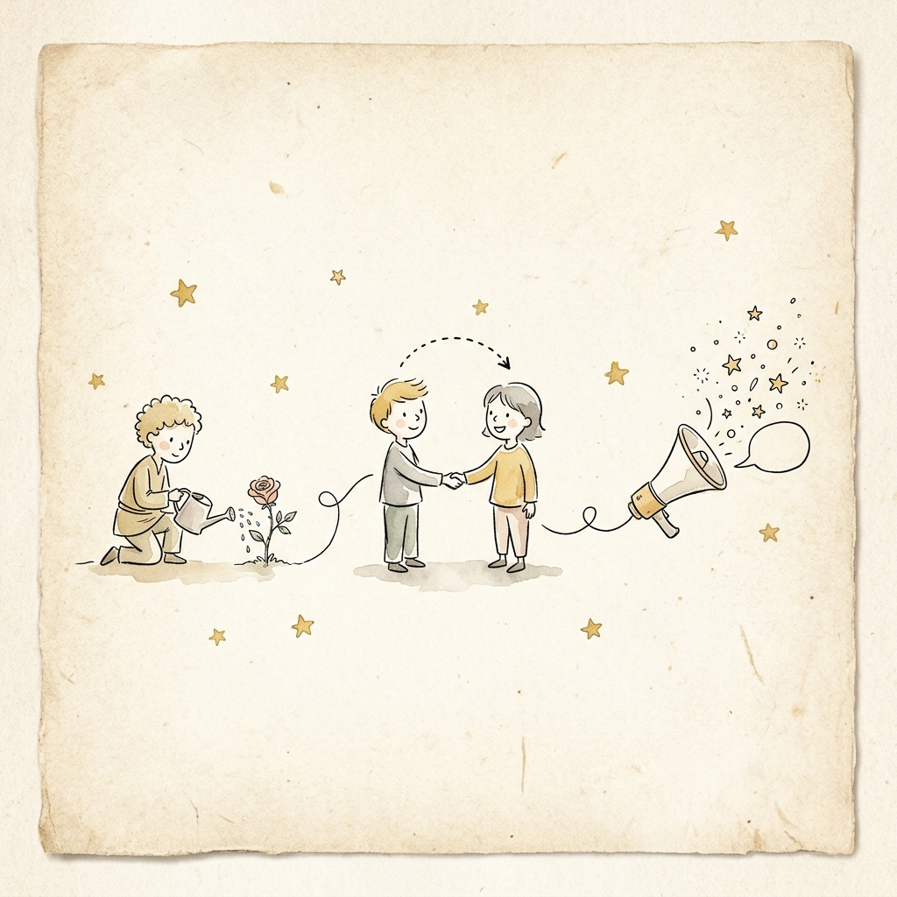
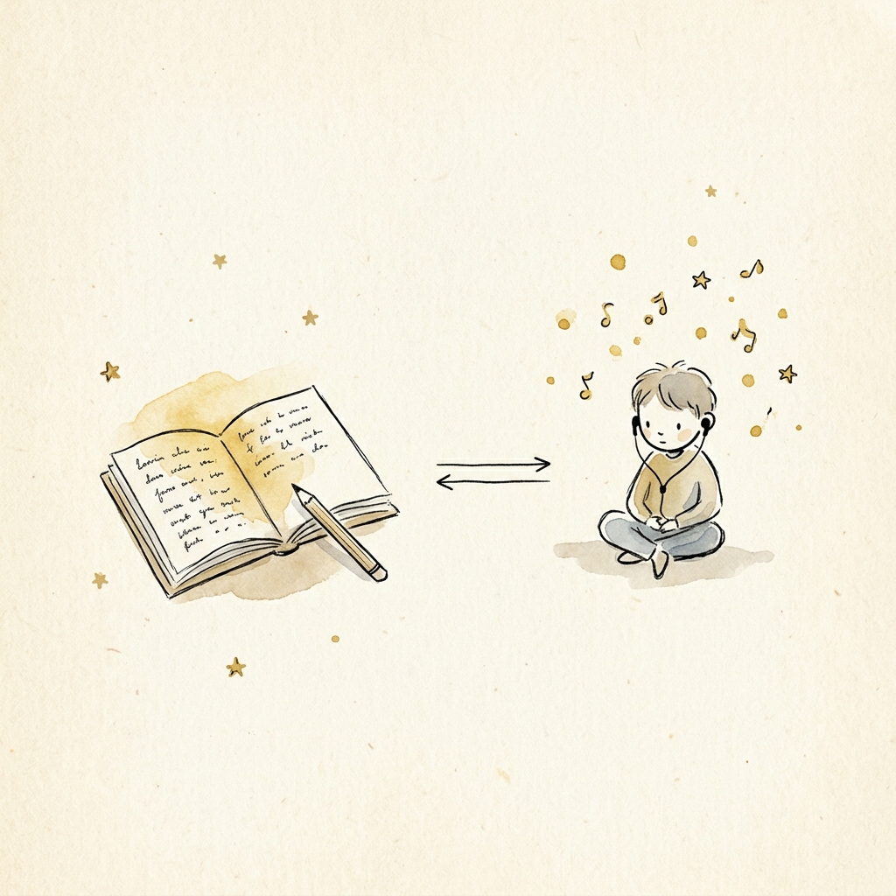

The Little
Prince,
twice told.
Saint-Exupéry's novella meets Mark Osborne's 2015 animated film — side by side.

Same title. Two centuries apart.

Le Petit Prince
- Author
- Antoine de Saint-Exupéry
- Year
- 1943 · New York
- Medium
- Illustrated novella · ~96 pp.
The Little Prince
- Director
- Mark Osborne
- Year
- 2015 · France
- Medium
- Stop-motion + CG · 108 min
Two worlds, one warning.
Saint-Exupéry wrote the book in exile during WWII — a longing for innocence in a world at war.
Osborne's film arrives in an age of schedules and devices — a protest against childhood lost to grown-up plans.

Heart vs. world.

Loneliness in a world of grown-ups.
A child crushed by a "Life Plan."
What both versions hold sacred.
The Rose
Fragile, unique love.
The Fox
"Tame me" — connection takes time.
Asteroid B-612
Home and responsibility.

Where the film takes a new path.

The Little Girl
A modern child narrator invented for the film.
A grown-up Prince
"Mr. Prince" — adult, gray, forgetful. Film only.
Two visual languages
Stop-motion for the story; CG for the modern world.
They complete each other.
The book plants the rose.
The film waters it.
My final verdict
The book is purer and more poetic — it trusts the silence between the words.
The film makes the message urgent for today. Read first, watch second.
What I would tell a classmate.
The book
Slow, illustrated, quotable.
The film
Clear English, beautiful visuals.
Both — in order
Read first, then watch.

What is essential is invisible to the eye.
— the fox, to the little prince
Water your rose.

Care, consistently
The Prince tended his rose every single day. Real social participation means showing up repeatedly, not just once — for a friend, a cause, or a community.
Look beneath the surface
The fox teaches that what is essential is invisible — empathy means listening to understand, not just to reply. We build stronger communities when we truly see each other.
Question "serious" logic
The grown-ups in the story only count and measure. A socially engaged citizen asks why — not just how much. Critical thinking is itself a form of participation.
In my own voice.
Reading the desert, listening to the stars.
Reading The Little Prince in English taught us new vocabulary — tame, essential, baobab, wither — and Saint-Exupéry's gentle, repeated sentences trained us to read slowly and carefully. Watching the 2015 film right after sharpened our listening: different characters speak in very different registers, so we had to follow tone, not just words. Together, both resources pushed us to write using comparison language like however, whereas, and in contrast — and that is the skill we are most proud to carry forward.
